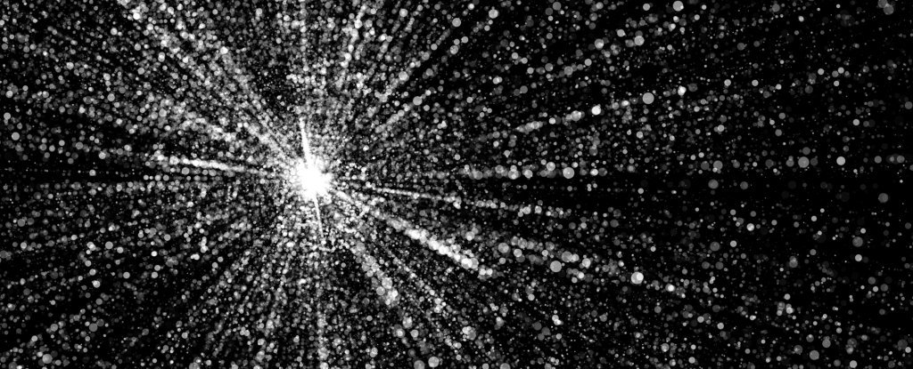

4° Notícia
Mapeamento das "Partículas Fantasmas" do Universo
A detecção contínua e o mapeamento de neutrinos de altíssima energia de origem astrofísica pelo Observatório IceCube culminaram na premiação do Prêmio Nobel de Física ao cientista Francis Halzen.
- O avanço: Utilizando um quilômetro cúbico de gelo profundo no Polo Sul com milhares de sensores ópticos, a equipe conseguiu capturar e rastrear a trajetória de neutrinos — partículas subatômicas de massa quase nula que atravessam a matéria quase sem interagir.
- Por que é incrível: Viabiliza o estudo e a aplicação de propriedades quânticas exóticas em condições normais de temperatura, abrindo caminho para o desenvolvimento de processadores ópticos ultrarrápidos e sensores de precisão quântica sem a necessidade de dispendiosos sistemas de refrigeração.
